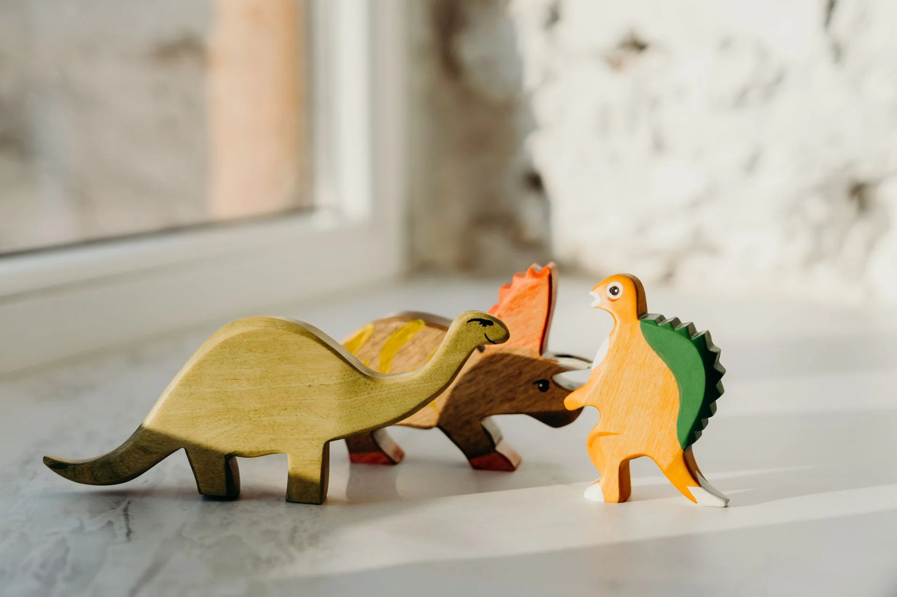

Imagem ilustrativa · não retrata o local ou a equipe
Imagem ilustrativa · não retrata o local ou a equipe01 / Terapia ocupacional infantil · Integração Sensorial de Ayres
Entender como a criança sente o mundo.
Clínica Sensi Kids. A Sensi Kids é uma clínica de terapia ocupacional infantil, em Mirassol, especializada em Integração Sensorial de Ayres.
- Terapia ocupacional
- Integração sensorial
- Mirassol
 Imagem ilustrativa · não retrata o local ou a equipe
Imagem ilustrativa · não retrata o local ou a equipe02 / Conheça a proposta
Terapia ocupacional infantil em Mirassol.
Terapia ocupacional infantil
Atendimento voltado a crianças, com linguagem acessível para as famílias.
Integração Sensorial de Ayres
Abordagem em que a clínica se diz especializada. Segundo a própria Sensi Kids, a equipe tem terapeutas com certificação internacional na área.
Avaliação
Pais e mães podem conversar com a equipe sobre dúvidas como recusa de brincadeiras de movimento, seletividade e dificuldades de regulação. A conduta é definida pelas terapeutas após avaliação.
Convênios
A clínica mantém um destaque sobre convênios no perfil; consulte as condições pelo WhatsApp.
Orientação às famílias
No Instagram, a equipe publica conteúdo educativo para pais e mães.
03 / Trajetória & cuidado
Uma clínica especializada em Integração Sensorial de Ayres.
A Sensi Kids começou com uma terapeuta e, segundo a própria clínica, hoje conta com três terapeutas com certificação internacional em Integração Sensorial de Ayres. O foco é a terapia ocupacional infantil, com acolhimento às famílias e informação clara. A clínica fica na Rua Rodrigues Alves, no Centro de Mirassol.
- Especializada em Integração Sensorial de Ayres, conforme a bio
- Equipe de três terapeutas, segundo a clínica
- Foco exclusivo em terapia ocupacional infantil
- Nota 5,0 nas avaliações do Google

Imagem ilustrativa · não retrata o local ou a equipe04 / Seu próximo passo
Vamos conversar?
Consulte horários, disponibilidade e condições pelo WhatsApp.
Terapia ocupacional infantil · Integração Sensorial de Ayres